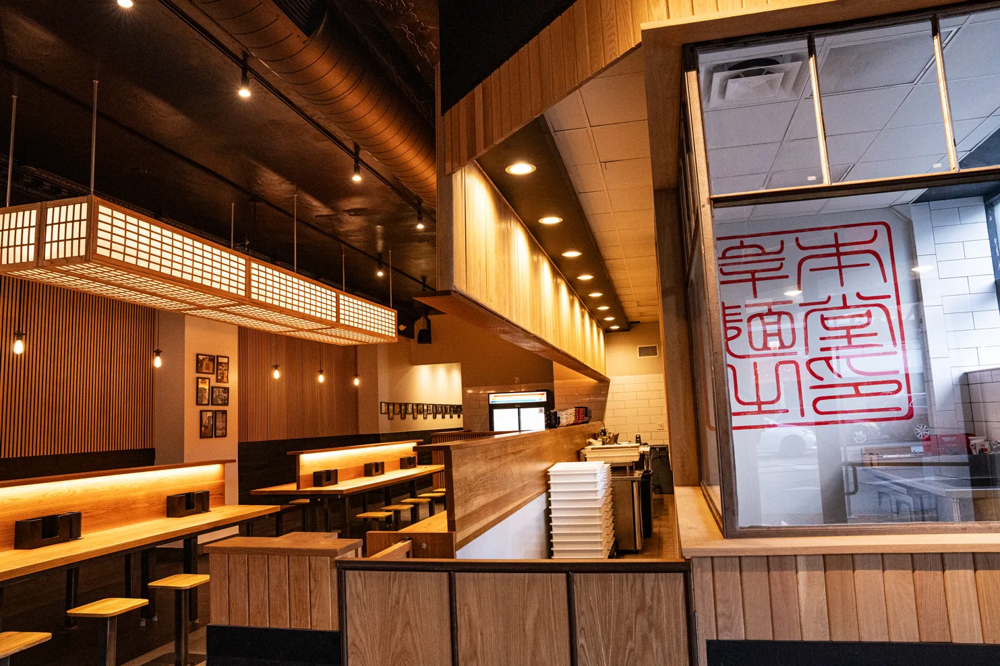

4.6 ⭐️⭐️⭐️⭐️⭐️
$20-30Shishito Peppers $5
flash fried, ponzu, katsuobushi
Japanese Potato Salad $5
mashed yukons with kewpie, cucumber, carrot, corn, cripsy shallot topping
Chashu Rice Bowl $8
chopped chashu on rice will scallion, ramen egg, nori, and scallion
Oolong Tea can
$3
Green Tea can
$3
Excel Bottled Soda
$3
Japanese ramen dish where cooked, chewy noodles are served in a separate bowl from a rich, concentrated dipping broth
Gyokai Tsukemen Classic $17
concentrated seafood infused pork bone borth served aside cold rinsed thick noodles, topped with pork belly chashu, kikurage, menma, scallion, and nori
Red Tsukemen $18
classic flavored with spicy miso
Brothless Ramen
Aburasoba $16
thick noodles tossed in smoked seafood infused lard, topped with pork belly chashu, menman, gyofun, scallion, and nori
Taiwan Mazesoba $18
concentrated seafood infused pork bone borth served aside cold rinsed thick noodles, topped with pork belly chashu, kikurage, menma, scallion, and nori
What you came here for!
Tonkotsu Classic $16
rich pork bone broth with thin hakata style noodles, topped with pork belly chashu, kikurage, scallion, and pickled red ginger
Tonkotsu Black $17
classic with addition of roasted garlic oil
Gyokai Tonkotsu Classic $18
rich seafood infused pork bone broth with thick lekei style noodles, topped with pork belly chashu, kikurage, menma, scallion, and nori
Gyokai Black $19
classic with addition of roasted garlic oil
Gyokai Red $20
classic with addition of spicy miso topping